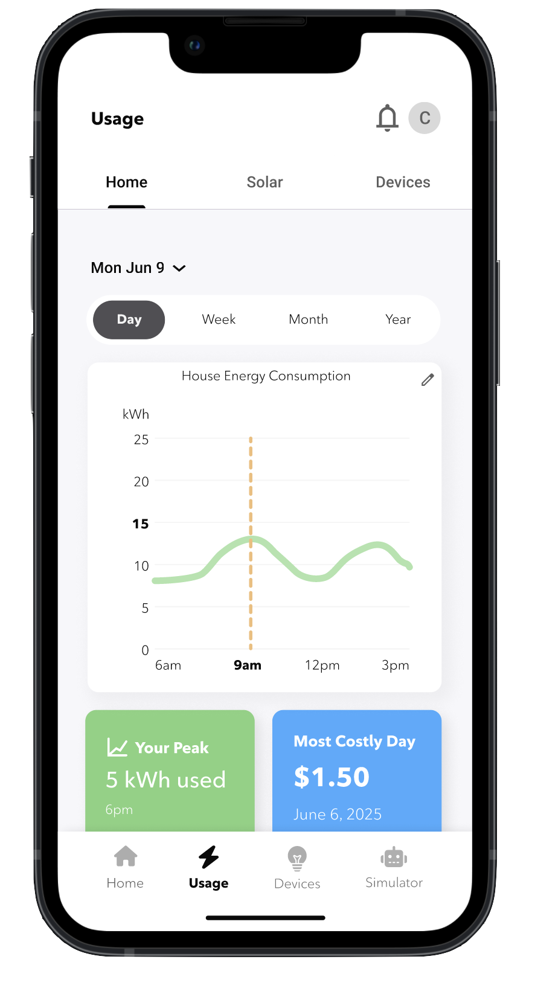
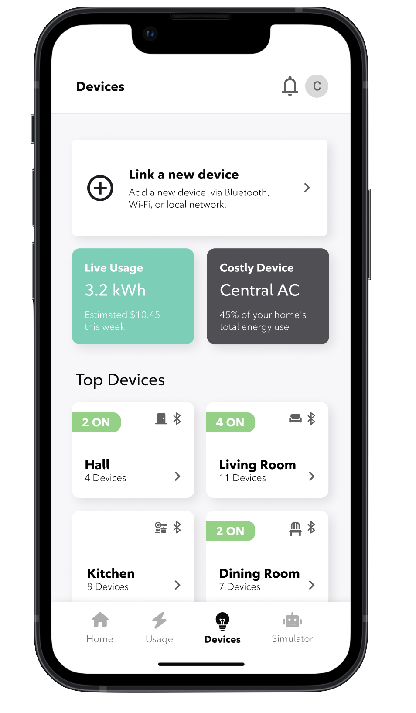
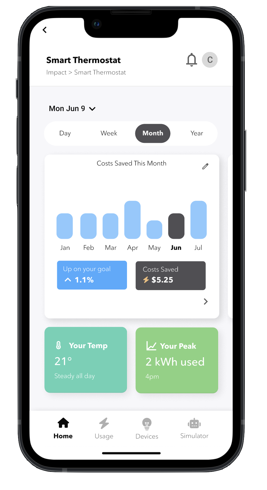
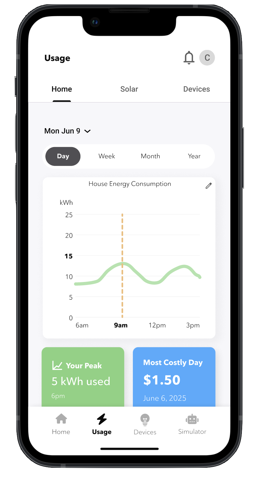
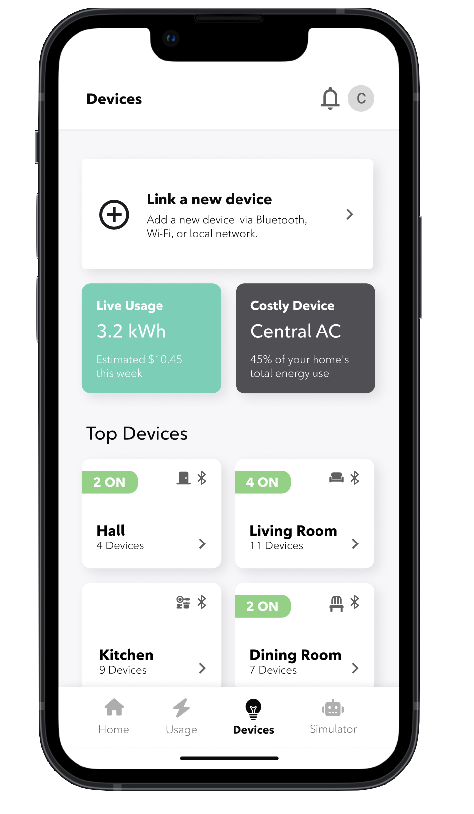
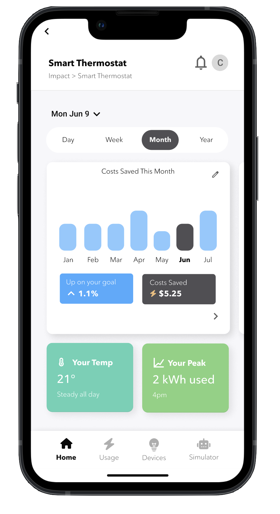

Rogers: Energy &
Utilities Dashboard
 





Energy UX That Works Anywhere
Overview
Designed a user-friendly energy & utilities dashboard for Rogers,
aimed at helping users monitor and control smart home devices while understanding
and optimizing their energy consumption. The dashboard supports both experienced
and inexperienced users in making informed energy-saving decisions.
It was created for presentation to stakeholders from a partnering company,
with integrated features reflecting their offerings.
Context
This project was developed for Rogers in partnership with municipally
owned electricity utility and distributor whose features were integrated into the app.
The goal was to give users intuitive control over energy usage and smart home devices.
Most existing dashboards are desktop-heavy, rely on complex graphs, and aren’t
optimized for mobile, making them hard to use for less tech-savvy users.
Blueprints for Better Energy
Process
üî¨ Research
We researched energy consumption trends, smart home tech, and user expectations
to understand the market. By analyzing existing dashboards, we identified usability gaps and
design opportunities. Personas for both tech-savvy and novice users guided our decisions,
and user flows and journeys ensured smooth, intuitive navigation.

User Personas
üí° Ideation
We started with low-fidelity sketches to explore layout, hierarchy, and core features.
These were refined into mid-fidelity designs in Figma with basic styling for validation.
Throughout ideation, we prioritized key features like device toggles, energy summaries,
and partner integrations to ensure the dashboard was both functional and user-friendly.
Low-fidelity Sketches
Designing for Utility & Usability
✍ Design
We created a high-fidelity prototype in Figma with realistic interactions
and transitions to simulate the final user experience. A design system was developed
alongside it, featuring reusable components and consistent styles to support scalability.
Accessibility was a key focus throughout, ensuring the interface was inclusive and easy
to use for a wide range of users.
Mid-fidelity Prototype

Dashboard Onboarding
We tested different layouts for dashboard onboarding (e.g. multiple screens,
fewer screens, greyed-out background) to see which was most efficient and user-friendly.
Toggle Bars
We faced issues with the double toggle bars at the top of the usage page (e.g. main navigation vs. time toggle)
that could be confusing or overwhelming for users. We addressed this issue in the high-fidelity prototype.
Link a Device
We tried different layouts for the link a device screens (e.g. full screen
vs. smaller screen and greyed-out background) to see which
would be best for linking multiple different appliances.
Editing Goals
To edit and delete reminders/goals in these screens, it was too much
of a hassle/over complex. We addressed this issue in the high-fidelity prototype by making the features
"in-screen" rather then in a greyed-out seperate screen.
Notification Layout
We tried different versions of notification screens to see which would be most fitting
for an energy and utilities app. We played around with colours and filters.
üõ†Ô∏è Testing
We conducted usability tests with both experienced and new users to
evaluate the dashboard’s effectiveness. Key pain points included confusing device
grouping, lack of feedback on energy-saving actions, and a desire for customizable views.
Based on this feedback, we iterated on the layout and interactions to improve clarity
and user control.
Final Product
Visuals & Colours
We added more colour (pastel yet vibrant green) and visuals (onboarding icons) to these screens to engage users as these are the first screens
they will view of the app.
Dashboard Widgets
Our dashboard widgets (Apple UI inspired) were optimized and coloured in our high-fidelity,
which brought them to life. Smaller features like widget-editing and side-scroll helped with user efficency.
Utility Company Implementation
Within our profile page we added more screens that connect to our partnering utility company
to draw more attention to how they bring benefit/value our app. The consent screens were key for user privacy.
Goals Usability
Our goals page was simplified and cleaned up so users can focus more on their aspirations
rather then how to navigate the screens. We implemented an AI feature to aid users with what energy goals
they want to aim for.
Solution
We delivered a mobile-first dashboard that simplifies energy monitoring
and smart device control through a clean, intuitive interface. Designed to address
common usability issues in existing platforms like cluttered layouts and poor mobile
support. It integrates partner features seamlessly while guiding users of all experience
levels toward smarter energy habits.
Reflection
This project sharpened my skills in building scalable design systems and creating
interactive prototypes in Figma, especially using advanced features like component variants and
smart animations. I also gained experience in aligning design decisions with stakeholder
priorities while ensuring the dashboard remained intuitive and accessible. One of the biggest
challenges was translating complex energy data into a clear, user-friendly interface that met
both business goals and user needs.
Energy Control for Everyone
üåü Results
Users responded positively to the dashboard’s clarity and ease of use. Stakeholders showed interest, and we’re preparing for feedback and next steps. The design improves accessibility and engagement over traditional dashboards.
üìã Outcome
The final product is a polished, interactive dashboard ready for stakeholder review. Next steps include refining features based on feedback and preparing for rollout.
üìà Metrics
We plan to track usability scores, task completion rates, post-launch engagement, and stakeholder satisfaction after the presentation.